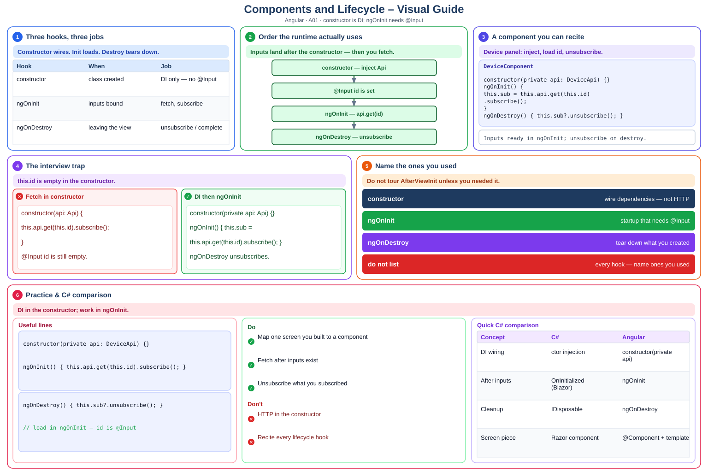

Definition
ngOnInit after inputs are set, ngOnDestroy to unsubscribe.- Component: Selector + template + class. One feature you owned should map to a component (or a small set).
- constructor vs ngOnInit: Constructor is for DI wiring. ngOnInit is for startup work that needs @Input values.
- ngOnDestroy: Unsubscribe or complete subjects you created so the component does not leak.
- Do not claim: Do not list every hook. Name the ones you used and why.

Decision flowchart
Read from the top. If the answer is YES, stop at that box. If NO, go down.
Step-by-step (beginner friendly)
- Step 1 — Component (before/after)
What it means: Selector + template + class. One feature you owned should map to a component (or a small set).
❌ Beforeconstructor(api: Api) { this.api.get(this.id).subscribe(); }✔ Afterconstructor(private api: Api) {} ngOnInit() { this.sub = this.api.get(this.id).subscribe(); }Takeaway: Component — pair definition with Before → After.
- Step 2 — constructor vs ngOnInit (before/after)
What it means: Constructor is for DI wiring. ngOnInit is for startup work that needs @Input values.
❌ Before// BEFORE — skip constructor vs ngOnInit✔ After// AFTER — apply constructor vs ngOnInit with a project exampleTakeaway: constructor vs ngOnInit — pair definition with Before → After.
- Step 3 — ngOnDestroy (before/after)
What it means: Unsubscribe or complete subjects you created so the component does not leak.
❌ Before// BEFORE — skip ngOnDestroy✔ After// AFTER — apply ngOnDestroy with a project exampleTakeaway: ngOnDestroy — pair definition with Before → After.
- Step 4 — Do not claim (before/after)
What it means: Do not list every hook. Name the ones you used and why.
❌ Before// BEFORE — skip Do not claim✔ After// AFTER — apply Do not claim with a project exampleTakeaway: Do not claim — pair definition with Before → After.
Interview prep A01 — Components, lifecycle hooks, when ngOnInit vs constructor vs ngOnDestroy.
- What is it?
- Where did you use it? (actual project)
- Why did you use it? (design decision)
- How did you implement it? (hands-on)
- What problem did it solve?
Quick reference
| Idea | Remember |
|---|---|
Component | Selector + template + class. One feature you owned should map to a component (or a small set). |
constructor vs ngOnInit | Constructor is for DI wiring. ngOnInit is for startup work that needs @Input values. |
ngOnDestroy | Unsubscribe or complete subjects you created so the component does not leak. |
Do not claim | Do not list every hook. Name the ones you used and why. |
1. Component — full example
What it means: Selector + template + class. One feature you owned should map to a component (or a small set).
Takeaway: Component — explain with a project story, not only a definition.
2. constructor vs ngOnInit — full example
What it means: Constructor is for DI wiring. ngOnInit is for startup work that needs @Input values.
Takeaway: constructor vs ngOnInit — explain with a project story, not only a definition.
3. ngOnDestroy — full example
What it means: Unsubscribe or complete subjects you created so the component does not leak.
Takeaway: ngOnDestroy — explain with a project story, not only a definition.
4. Do not claim — full example
What it means: Do not list every hook. Name the ones you used and why.
Takeaway: Do not claim — explain with a project story, not only a definition.
Self-check quiz
Component?Show answer
constructor vs ngOnInit matter?Show answer
Show answer
Q: Explain Components and Lifecycle for an interviewer.
A: I built the device status panel as a component. I load data in ngOnInit because deviceId comes from @Input, and I unsubscribe in ngOnDestroy.
Q: What does interview-ready look like for this skill?
A: Explains one feature they built as a component tree plus one hook they needed
Q: Give the Interview 5 in one breath.
A: What it is, where I used it, why we chose it, how I implemented it, and the problem it solved.
Practice
- Explain
Componentwith a project example. - Compare
constructor vs ngOnInitwith an alternative. - Answer the Interview 5 for: Explains one feature they built as a component tree plus one hook they needed
- Speak the Interview 5 for A01 out loud (60 seconds).
Inputs ready in ngOnInit; unsubscribe on destroy.
Syntax-colored view
| 1 | @Component({ selector: 'app-device', template: '{{name}}' }) |
| 2 | export class DeviceComponent implements OnInit, OnDestroy { |
| 3 | @Input() id = ''; |
| 4 | private sub?: Subscription; |
| 5 | constructor(private api: DeviceApi) {} |
| 6 | ngOnInit() { this.sub = this.api.get(this.id).subscribe(); } |
| 7 | ngOnDestroy() { this.sub?.unsubscribe(); } |
| 8 | } |